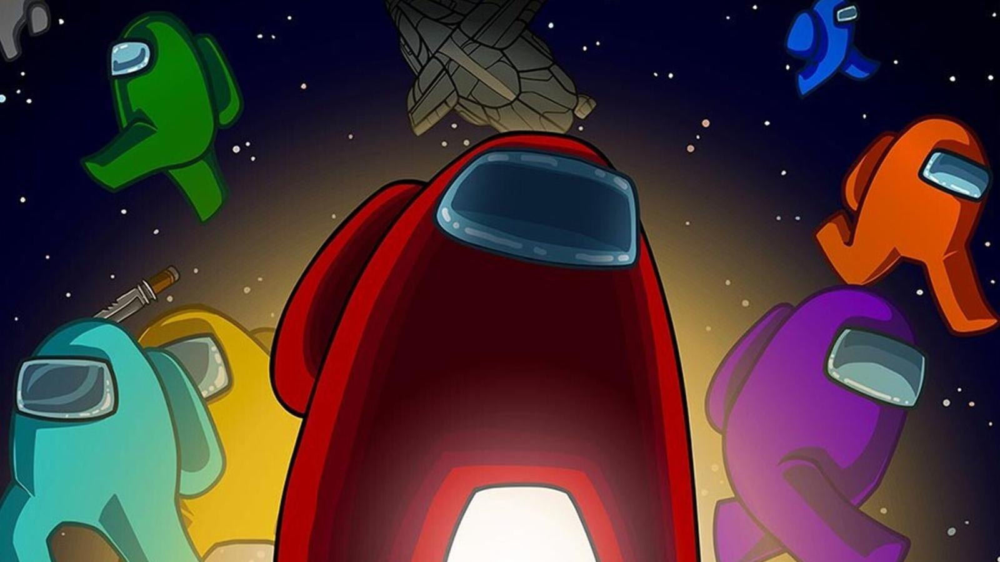

There is a Solution Among us.
Let us get the situation straight. The month is October 2020. Racism is a big issue, just as it has been since time immemorial. So are sexism and ageism. The rich white cis male straight boomer population are suppressing everyone else just as hard as they always have. It seems oddly specific if you ask me. Most of the black people are trying to speak up for themselves and protect their reputation but are needlessly killed off by the white police just for being black (code for suspicious). It feels almost like we are playing that really popular game Among Us, where red usually takes the blame because of his color. But how I wish I could play another round even after I die, because this is the real life, and reality is horrifying.
For every unjust killing for the “suspicious” (mostly young black men) left unmatched, the younger generations just get louder and stronger, without end. If we do not stop this inequality, the younger people will be stronger than the Godzilla and wreck the whole city apart, and we are incredibly closer than we all would prefer to believe. Understandably, I am outraged by this. So I myself have hatched a plan in the comfort of my bed that can fix this massive issue.
If we are to get rid of the population we are to do it in style.
It’s only fair that if we were getting rid of just black people until now, we would have to do the same to everyone else, regardless of whatever characteristics they might possess. Every age, race, gender, sexuality, community, everyone is equal. Even I am not exempt from this. I myself am included in the community, and as a person I am equally likely to be sent to space as everyone else. I was considering killing everyone in a battle-royale fashion, but that would be too violent, and it would end up causing several legal problems.
How exactly do we go about sending everyone to space? Let us get back to that game I referenced earlier: Among Us. In the game, there are up to 10 characters aboard a spaceship called The Skeld. One to three of them are the impostors and the rest are crewmates. The crewmates do their jobs around the ship, ranging from taking out the trash to charting the spaceship’s course to fixing the wiring. They win when they finish all their tasks or get rid of all the impostors. The Impostors, however, are to kill off the rest of the crewmates without being found out. They can also hide in vents and sabotage the ship, from causing a reactor meltdown in 30 seconds to closing off and locking the doors to breaking the lights. They win if the number of crewmates left alive is equal to the number of impostors left alive. If a crewmate were to find a dead body, they can report and call a meeting (they can also run to the cafeteria and press the emergency button if they catch the impostor entering a vent or doing something else suspicious). They discuss who they think the impostor is, and hold a vote (there’s an option to skip vote). The person with the most votes is kicked off the ship to freeze in the desolate outer space (nobody is ejected if there is a tie or skip vote has the most votes). They repeat until they catch all of the impostor(s).
I was thinking, since this is such a fun game, can we try it in real life? There cannot possibly be something wrong with playing a game. Sure, I would probably end up with a copyright strike for copying their game but who cares about that. The game works as follows: ten volunteers are to enter a spaceship that will fly away from the earth and into outer space, manned by a qualified judge and pilot. The one or two impostors are randomly selected from the batch of 10. Everyone wears color-coded space suits and shall refer to each other by their colors, as to prevent any unfair killings such as killing all the black people first or killing all the women first. They shall take keep their vote secret as to not give anyone else ideas and to prevent ganging on people or influencing the vote in some way or another. The game is played, and the survivors are flown back to earth. To be completely fair, the judges and pilots are also eligible to participate.
Why is it acceptable for me to implement the game in real life? Aside from consequences from the legal department, we have three reasons:
The experience is fun and thrilling.
The mobile game has a massive success backed up with it. This is because people get to play together in a short and simple but exciting game. The game itself has over 42 million downloads[1], with over 300 thousand people playing daily[2]. If the game itself is so fun to play that several streamers are seen to be milking the game for content, so must the real-life adaptation.
The weaker players get weeded out.
Due to the nature of the game Among Us, the weak, the incompetent, and the less intelligent will all be weeded out of the population. The slightly stronger majority will stay intact. After a couple hundred thousand games, only the bravest, strongest, smartest, and luckiest remain. The games will stop and those that remain will be fit to rule.
The planet becomes less crowded.
As of October 24, 2020 there are 7.82 billion people on earth[3]. In the future, this number is only going to increase. With a steadily increasing population, us people are going to get more crowded easily, simply because there are more people fitting in a lesser space. By sending people into outer space we can fix overpopulation in two ways: we are lessening the population on earth, and at the same time we are giving our human population more space.
The game Among Us will surely fit for a solution to overpopulation. Not only does it have a massive success backing it up, it also leaves us with a smarter and stronger population in the end. Now all that's left is to get the rights to implement the game in real life…